Medical Conditions We Treat
From everyday aches to sports injuries and specialized care, our physiotherapists design an individualized recovery plan for every condition below.
Browse Our Treatment Categories Below To Find The Right Physiotherapy Care For Your Condition.

Neck Pain
Neck pain can develop due to prolonged sitting, poor posture, muscle tension, injuries or age-related changes in the spine. It may cause stiffness, headaches, reduced neck movement or pain extending into the shoulders and arms. At SJ Physiotherapy, treatment focuses on identifying the underlying cause and improving mobility, strength, posture and function through personalized physiotherapy and rehabilitation.
Low Back Pain
Low back pain is a common condition that can affect daily activities, work, exercise and sleep. It may result from muscle strain, poor posture, spinal problems, reduced core strength or movement-related issues. Physiotherapy can help reduce pain, restore mobility, improve strength and prevent recurring problems through individualized exercise therapy, manual therapy, posture correction and functional rehabilitation.
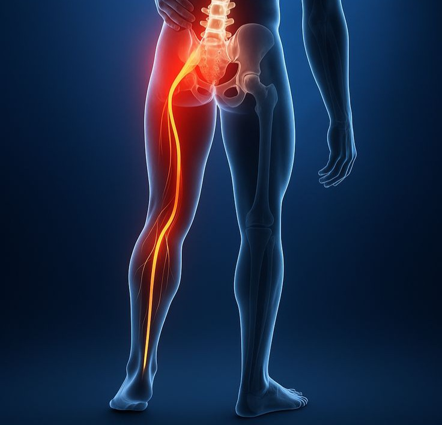
Sciatica
Sciatica refers to pain that travels along the pathway of the sciatic nerve, often affecting the lower back, buttock and leg. Symptoms may include pain, tingling sensation, numbness or weakness. At SJ Physiotherapy, treatment begins with a detailed assessment to identify contributing factors. Personalized physiotherapy may include mobility exercises, manual therapy, strengthening, posture correction and functional rehabilitation.
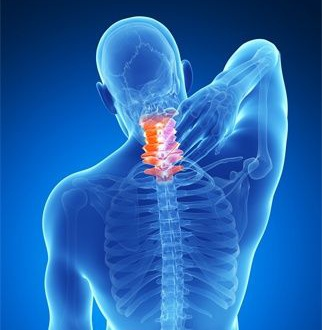
Spondylosis
Spondylosis is a degenerative condition that commonly affects the spine and may lead to pain, stiffness, reduced mobility and difficulty performing everyday activities. Physiotherapy can help manage symptoms and maintain movement through individualized rehabilitation. Treatment may include manual therapy, therapeutic exercises, posture correction, strengthening, flexibility training and education to help patients manage their condition confidently.

Frozen Shoulder
Frozen shoulder can cause significant shoulder pain, stiffness and difficulty with movements such as reaching overhead or behind the back. The condition can interfere with dressing, sleeping and everyday activities. Physiotherapy focuses on gradually restoring shoulder mobility while managing pain and improving function. Treatment may include gentle mobilization, stretching, therapeutic exercises and progressive strengthening based on individual needs.
Shoulder Impingement
Shoulder impingement may cause pain during lifting, reaching or overhead activities and can affect shoulder strength and movement. It may be associated with movement patterns, muscle weakness, repetitive activity or shoulder dysfunction. Physiotherapy focuses on improving shoulder mechanics, mobility, strength and control. A personalized rehabilitation program may include manual therapy, therapeutic exercises, posture correction and functional training.
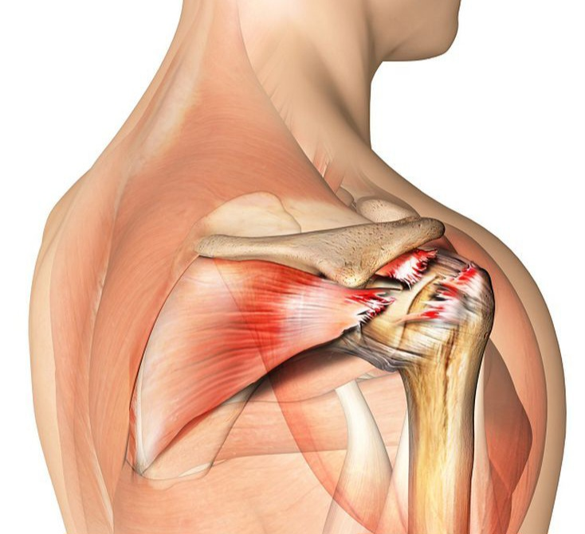
Rotator Cuff Injury
Rotator cuff injuries can cause shoulder pain, weakness and difficulty with lifting or reaching movements. They may occur due to sports, repetitive activities, overuse or injury. Physiotherapy can support recovery by improving shoulder mobility, muscle strength, coordination and functional movement. Treatment is tailored to the individual's condition and may include manual therapy, therapeutic exercise, progressive strengthening and rehabilitation.

Tennis Elbow
Tennis elbow is commonly associated with pain around the outer part of the elbow and may develop due to repetitive gripping, lifting or wrist movements. It can affect work, sports and daily activities. Physiotherapy aims to reduce discomfort, improve movement and restore strength through individualized rehabilitation. Treatment may include manual therapy, therapeutic exercises, soft tissue release technique and progressive strengthening.
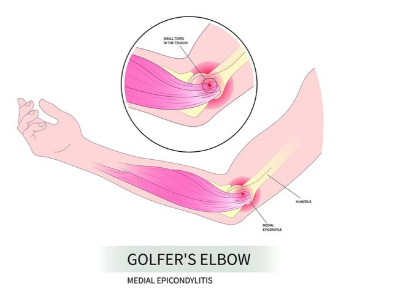
Golfer's Elbow
Golfer's elbow can cause pain and tenderness around the inner side of the elbow, particularly during gripping, lifting or repetitive wrist movements. It may develop through overuse or repetitive strain. Physiotherapy can help improve elbow and wrist function while gradually restoring strength. Treatment may include soft tissue release technique, manual therapy, stretching, strengthening exercises and activity modification based on individual requirements.
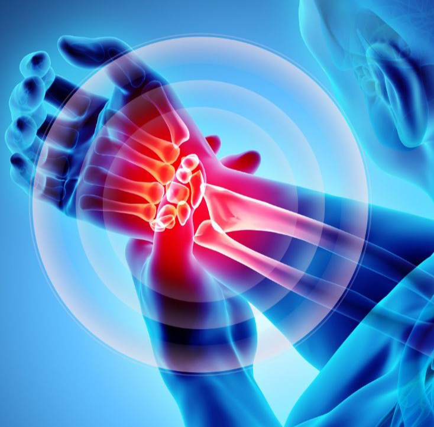
Wrist Pain
Wrist pain can occur due to overuse, repetitive movements, injuries, muscle strain problems or other musculoskeletal conditions. Symptoms may include pain, stiffness, weakness or difficulty gripping objects. Physiotherapy involves assessing wrist movement and identifying contributing factors. Treatment may include manual therapy, therapeutic exercises, stretching, strengthening, ergonomic advice and functional rehabilitation to improve wrist mobility and everyday use.

Hip Pain
Hip pain can affect walking, sitting, climbing stairs, exercising and other everyday movements. It may be associated with muscle weakness, joint problems, injuries, overuse or movement-related issues. At SJ Physiotherapy, treatment begins with an individual assessment to understand the contributing factors. Physiotherapy may include manual therapy, mobility exercises, strengthening, movement retraining and functional rehabilitation.
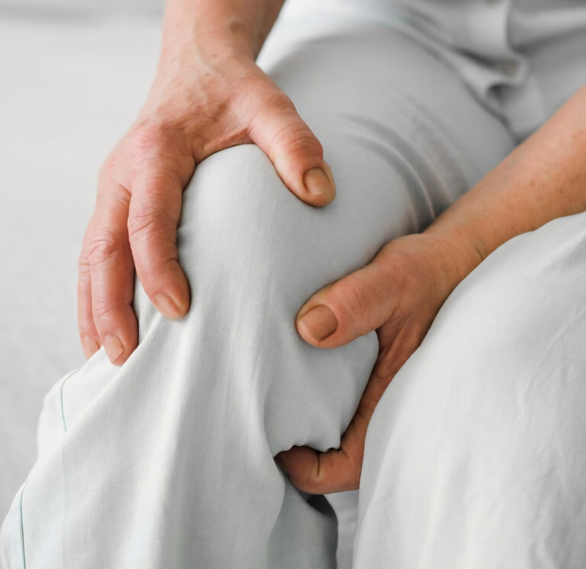
Knee Pain
Knee pain can make walking, climbing stairs, squatting, exercising and other daily activities difficult. It may occur following an injury, overuse, muscle weakness or joint-related conditions. Physiotherapy can help improve knee movement, strength, stability and function. Treatment is personalized and may include manual therapy, therapeutic exercises, strengthening, balance training, movement correction and progressive rehabilitation.
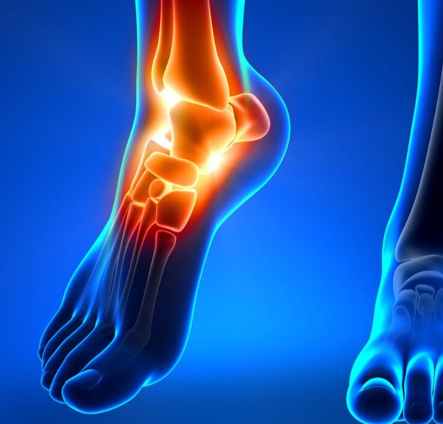
Heel Pain
Heel pain can make walking, standing, exercising and daily activities uncomfortable. It may be associated with overuse, foot mechanics, muscle tightness or conditions affecting the tissues around the heel. Physiotherapy begins with an assessment of movement and contributing factors. Treatment may include stretching, strengthening, manual therapy, mobility exercises, gait correction and activity guidance tailored to individual needs.
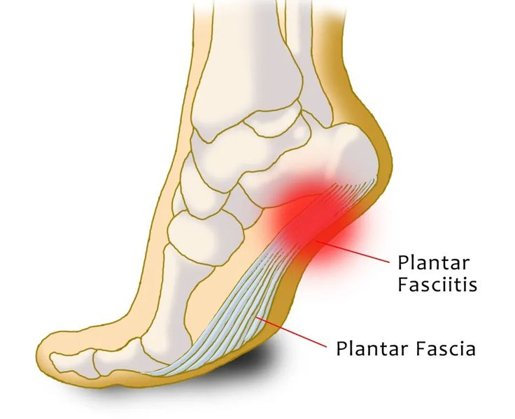
Plantar Fasciitis
Plantar fasciitis commonly causes pain around the bottom of the heel and foot, particularly during weight-bearing activities. It may be associated with repetitive loading, foot mechanics, muscle tightness or changes in activity. Physiotherapy can help improve foot and lower-limb function through stretching, strengthening, manual therapy, mobility exercises and movement education designed to support recovery and comfortable daily activity.
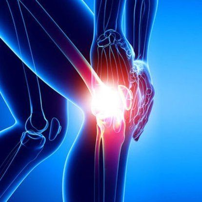
Osteoarthritis
Osteoarthritis can cause joint pain, stiffness, reduced mobility and difficulty with everyday activities. It commonly affects weight-bearing joints such as the knees and hips. Physiotherapy can help patients maintain movement, improve muscle strength and support functional independence. Treatment may include therapeutic exercises, mobility work, strengthening, balance training, activity guidance and education designed around the individual's abilities and goals.
Rheumatoid Arthritis
Rheumatoid arthritis can affect joints and may contribute to pain, stiffness, weakness and difficulty with movement. Physiotherapy can form part of a comprehensive approach to maintaining mobility and physical function. Treatment is individualized according to the person's condition and may include gentle exercises, mobility training, strengthening, functional rehabilitation and education to support safe movement and everyday independence.

Post-Surgical Rehabilitation
Post-surgical rehabilitation helps restore movement, strength, mobility and function after surgery. At SJ Physiotherapy, we provide personalized rehabilitation following knee replacement, hip replacement, ACL reconstruction, shoulder surgery, fracture fixation, spine surgery and arthroscopy. Treatment may include mobility exercises, strengthening, manual therapy, balance training and functional rehabilitation, with progress guided by the individual’s recovery and surgical requirements.

Ligament Injury
A ligament injury can affect knee stability, strength, movement and confidence during sports or everyday activities. Rehabilitation is important for restoring function and preparing the knee for a safe return to activity. At SJ Physiotherapy, treatment may include progressive strengthening, mobility exercises, balance and coordination training, functional exercises and sport-specific rehabilitation based on the individual's recovery stage.

Meniscus Injury
A meniscus injury can cause knee pain, swelling, stiffness or difficulty with movements such as squatting, turning and climbing stairs. Physiotherapy focuses on restoring comfortable movement and improving knee strength and function. Depending on the individual's condition, rehabilitation may include mobility exercises, strengthening, balance training, functional movement exercises and a gradual return to normal activities or sports.

Ankle Sprain
An ankle sprain can occur when the ligaments around the ankle are overstretched or injured, often resulting in pain, swelling, stiffness and difficulty walking. Proper rehabilitation helps restore movement, strength, balance and confidence. Physiotherapy may include mobility exercises, strengthening, balance training, gait rehabilitation and progressive functional activities to support recovery and reduce the risk of recurring ankle problems.

Achilles Tendinitis
Achilles tendinitis can cause pain, stiffness and tenderness around the Achilles tendon, particularly during walking, running, jumping or other activities. It may develop following repetitive loading or changes in activity. Physiotherapy focuses on gradually improving tendon capacity and lower-limb function. Treatment may include mobility exercises, progressive strengthening, stretching, activity modification and functional rehabilitation according to the individual's recovery stage.

Muscle Strain
A muscle strain can occur when a muscle is overstretched or subjected to excessive force, commonly during sports, exercise or sudden movements. Symptoms may include pain, tenderness, weakness and restricted movement. Physiotherapy supports recovery through a progressive rehabilitation approach that may include mobility exercises, stretching, strengthening, functional training and a gradual return to normal activities or sports.

Pregnancy Exercise Programs
Pregnancy exercise programs are designed to help women stay active, comfortable and physically prepared throughout pregnancy. At SJ Physiotherapy, exercises are individually planned according to the stage of pregnancy and the woman's needs. Physiotherapy may focus on mobility, posture, strength, breathing and safe movement strategies to support physical well-being and prepare the body for childbirth and recovery.

Postpartum Recovery
After childbirth, women may experience reduced core strength, pelvic floor weakness, abdominal muscle separation, back pain or difficulty returning to normal activities. Postpartum physiotherapy provides individualized rehabilitation to support recovery. Treatment may include core strengthening, pelvic floor exercises, mobility work, posture correction and functional training. SJ Physiotherapy provides personalized care to help women regain strength, confidence and movement.

Diastasis Recti
Diastasis recti is a separation of the abdominal muscles that can occur after pregnancy. It may affect core strength, abdominal control, posture and physical function. Physiotherapy can provide assessment and individualized exercises to improve core control and functional strength. At SJ Physiotherapy, rehabilitation focuses on safe, progressive exercises suited to each woman's condition and recovery stage.

Urinary Incontinence
Urinary incontinence can affect a woman's confidence and ability to participate comfortably in everyday activities. Pelvic floor physiotherapy may help improve muscle strength, coordination and control. At SJ Physiotherapy, treatment begins with an individualized assessment followed by appropriate pelvic floor exercises and education. Rehabilitation is designed around the woman's symptoms, functional needs and personal recovery goals.

Pregnancy-Related Pain
Pregnancy can bring physical changes that contribute to back pain, pelvic discomfort, muscle weakness and movement difficulties. Specialized physiotherapy can help women stay active and comfortable through safe, individualized exercise and education. Treatment may include mobility exercises, strengthening, posture guidance and appropriate movement strategies. At SJ Physiotherapy, care is tailored to the individual's stage of pregnancy and functional needs.

Postpartum Rehabilitation
Postpartum rehabilitation helps women regain strength, mobility and confidence after childbirth. Physiotherapy programs may focus on core strength, pelvic floor function, posture, flexibility and gradual return to daily activities. At SJ Physiotherapy, rehabilitation is personalized according to individual needs and recovery goals, helping women rebuild physical strength and improve comfort during the postpartum period.

Pelvic Floor Muscle Training
Pelvic floor muscle training helps improve the strength, control and function of the muscles supporting the pelvic organs. It can be an important part of women's health physiotherapy during pregnancy and after childbirth. At SJ Physiotherapy, individualized exercises and guidance are provided according to each woman's needs, helping support pelvic health, physical confidence and everyday functional activities.

Low Back Pain During Pregnancy
Low back pain is common during pregnancy as the body undergoes physical and postural changes. Physiotherapy can help women manage discomfort and maintain safe movement throughout pregnancy. At SJ Physiotherapy, treatment may include gentle exercises, mobility work, posture guidance, strengthening and movement education. Programs are individually adapted according to the stage of pregnancy and the woman's specific needs.

Post-Caesarean Rehabilitation
Post-Caesarean rehabilitation supports women as they gradually return to normal movement and physical activity following childbirth. Physiotherapy may focus on mobility, posture, core recovery, abdominal strength and functional activities. At SJ Physiotherapy, rehabilitation programs are personalized and progressed according to individual recovery. The goal is to help women regain strength, confidence and comfortable movement safely.

Balance Disorders
Balance difficulties can affect walking, standing, changing positions and confidence during everyday activities. They may increase the risk of instability and falls, particularly in older adults or people recovering from certain conditions. Physiotherapy can assess movement and balance and provide individualized rehabilitation. Treatment may include balance exercises, strengthening, gait training, functional activities and strategies to improve safe mobility.
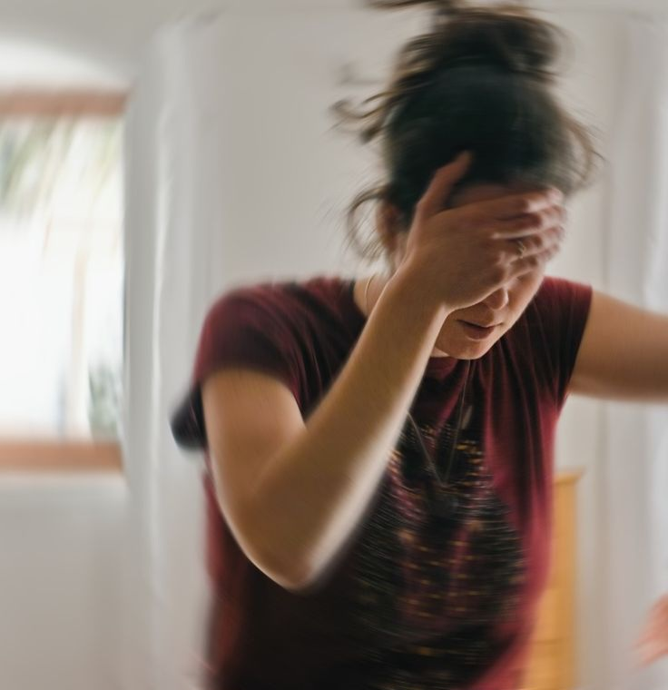
Vertigo Rehabilitation
Vertigo can cause sensations of spinning, dizziness, unsteadiness and difficulty with movement or balance. Physiotherapy-based vestibular rehabilitation may help suitable patients improve balance and confidence with movement following appropriate assessment. Treatment is individualized and may include balance exercises, movement-based rehabilitation, gait training and carefully selected exercises based on the person's symptoms and functional requirements.
Postural Dysfunctions
Poor posture can contribute to muscle tension, discomfort, movement limitations and recurring aches, particularly during prolonged sitting or standing. Physiotherapy can assess posture, movement patterns, muscle strength, flexibility and workplace habits to identify contributing factors. Treatment may include posture education, therapeutic exercises, strengthening, stretching, ergonomic guidance and biomechanical correction to encourage healthier and more comfortable movement.
Balance Training
Balance can become more challenging with age, affecting confidence and independence during everyday activities. Physiotherapy-based balance training helps older adults improve stability, coordination and control during standing and walking. At SJ Physiotherapy, exercises are tailored to individual abilities and may include progressive balance activities, strengthening and functional movement training to support safer and more confident mobility.

Fall Prevention
Falls can affect an older person's confidence, mobility and independence. Physiotherapy can help identify movement and strength factors that may contribute to fall risk. At SJ Physiotherapy, fall-prevention programs may include balance exercises, strength training, walking practice and functional movement activities. Individualized rehabilitation aims to improve stability, confidence and safety during everyday activities.

Walking Training
Walking ability can be affected by weakness, balance difficulties, joint problems or reduced mobility. Physiotherapy can help older adults improve walking patterns, strength, coordination and confidence. At SJ Physiotherapy, walking training is individualized according to each person's functional abilities. Exercises may include gait practice, balance activities, strengthening and mobility training to support safer and more independent movement.
Arthritis Management
Arthritis can cause joint pain, stiffness, weakness and reduced mobility, making everyday activities more difficult for older adults. Physiotherapy can help maintain movement and improve physical function through individualized rehabilitation. Treatment may include gentle mobility exercises, strengthening, flexibility training, balance activities and education. At SJ Physiotherapy, programs are designed around each individual's abilities and functional goals.

Strength Training
Maintaining muscle strength is important for older adults to remain active and independent. Reduced strength can affect walking, balance, transfers and everyday activities. Physiotherapy can provide progressive strengthening programs based on individual abilities and functional needs. At SJ Physiotherapy, exercises are carefully selected to improve strength, movement control and confidence while supporting safer performance of daily activities.

Mobility Enhancement
Reduced mobility can make everyday activities such as walking, standing and changing positions more difficult for older adults. Physiotherapy can help maintain and improve functional movement through personalized rehabilitation. At SJ Physiotherapy, mobility programs may include stretching, joint mobility exercises, strengthening, balance training and functional activities designed to support independence, improve movement confidence and enhance everyday physical function.
Treatment Techniques
The hands-on methods, therapeutic exercise and modalities our physiotherapists draw on to build every recovery plan.

Myofascial Release
Myofascial release is a hands-on technique used to address tension and restrictions in muscles and surrounding connective tissues. It may help improve tissue mobility, reduce muscle tightness and support comfortable movement. At SJ Physiotherapy, myofascial release is incorporated into individualized treatment programs based on the patient's assessment, symptoms, movement limitations and rehabilitation goals.
Strength and Conditioning
Strengthening exercises are an important part of physiotherapy rehabilitation for improving muscle power, joint support, movement control and functional performance. At SJ Physiotherapy, strengthening programs are individually prescribed according to the patient's condition, abilities and goals. Exercises can be progressed gradually to support recovery following injury, surgery, pain, weakness or reduced physical activity.

Functional Training
Functional training uses exercises that relate to movements required in everyday life, work or sports. It can help improve strength, coordination, balance, mobility and movement confidence. At SJ Physiotherapy, functional exercises are selected according to individual goals and gradually progressed as recovery improves. This approach helps patients build practical movement skills for their daily activities.

Biomechanical Correction
Biomechanical correction focuses on identifying movement patterns that may contribute to pain, weakness, stiffness or recurring injuries. At SJ Physiotherapy, movement and functional patterns are assessed to understand individual needs. Treatment may include targeted exercises, movement retraining, strengthening and posture-related guidance to improve movement efficiency, physical function and confidence during everyday or sporting activities.

Core Stability Training
Core stability training focuses on improving the strength and control of muscles that support the trunk and spine. Better core control can contribute to efficient movement during daily activities, exercise and sports. At SJ Physiotherapy, individualized exercises are selected according to the patient's needs and may be progressively advanced to improve stability, strength, coordination and functional performance.
Postural Correction
Postural correction focuses on improving body alignment and movement habits that may contribute to discomfort or physical strain. Prolonged sitting, repetitive activities and poor movement patterns can affect posture over time. Physiotherapy may include strengthening, stretching, mobility exercises, ergonomic guidance and movement education to encourage better posture and support comfortable, efficient movement during daily activities.
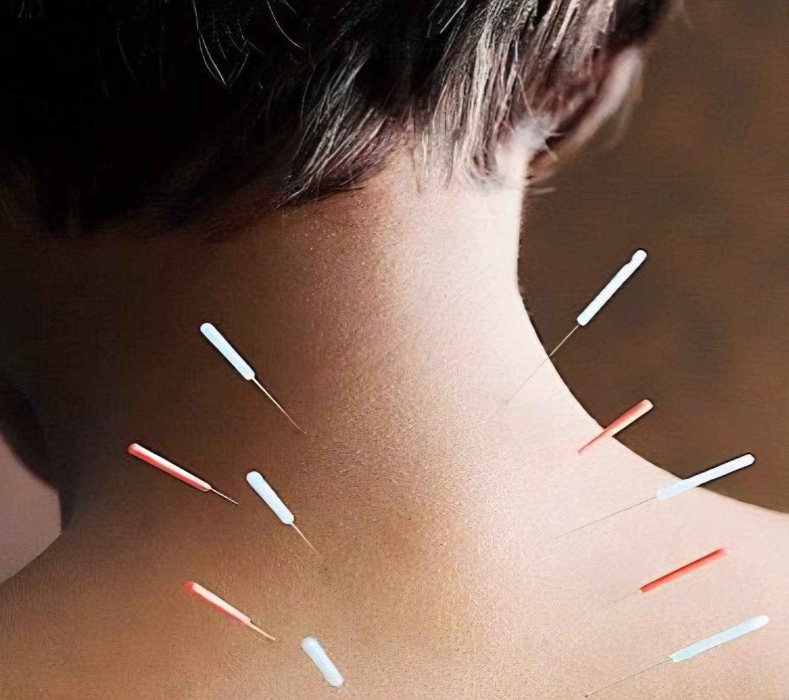
Dry Needling
Dry needling is a physiotherapy technique used as part of treatment for selected muscular and soft-tissue conditions. It may be incorporated to address areas of muscle tension and trigger points alongside other rehabilitation approaches. At SJ Physiotherapy, dry needling is used following appropriate assessment and may be combined with manual therapy, therapeutic exercise and movement-based rehabilitation.
Cupping Therapy
Cupping therapy is a soft-tissue technique that may be incorporated into physiotherapy treatment for selected musculoskeletal conditions. It involves applying cups to targeted areas of the body as part of a broader treatment approach. At SJ Physiotherapy, cupping therapy may be combined with manual therapy, therapeutic exercises and rehabilitation according to the patient's condition and treatment goals.
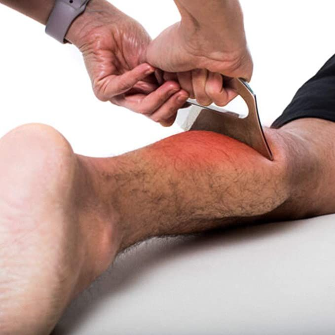
IASTM
Instrument-Assisted Soft Tissue Mobilization (IASTM) is a technique used to address soft-tissue restrictions and areas of muscular or connective-tissue tightness. It may be incorporated into physiotherapy treatment to support mobility and comfortable movement. At SJ Physiotherapy, IASTM is selected according to individual assessment findings and can be combined with exercise therapy and other rehabilitation techniques.
Kinesio Taping
Kinesio taping is a supportive technique that uses specialized elastic tape applied to targeted areas of the body. It may be incorporated into physiotherapy programs to provide support during movement and complement rehabilitation exercises. At SJ Physiotherapy, taping is selected based on individual assessment and may be used alongside exercise therapy, manual therapy and functional rehabilitation.
Electrotherapy
Electrotherapy uses controlled electrical energy as part of physiotherapy treatment to help manage pain, support muscle activation and promote functional recovery. At SJ Physiotherapy, electrotherapy is selected according to the patient's condition, symptoms and treatment goals. Electrotherapy is generally combined with exercises, manual therapy, stretching and functional rehabilitation rather than being used as a stand-alone treatment. Treatment is customized based on individual assessment and clinical needs.
Balance Training
Balance training focuses on improving stability, coordination, body control and confidence during standing and movement. It can be useful for individuals recovering from injuries, experiencing mobility difficulties or working to reduce fall risk. At SJ Physiotherapy, balance exercises are customized according to each patient's abilities and progressively developed to support safer and more controlled functional movement.
Ergonomic Correction
Ergonomic training focuses on improving the way you sit, stand, move and perform daily work activities to reduce unnecessary stress on the body. At SJ Physiotherapy, we provide personalized ergonomic guidance based on your workplace, posture and daily routine.
Our ergonomic training includes:
- Workplace and posture assessment
- Correct sitting and standing techniques
- Proper desk, chair and monitor positioning
- Keyboard and mouse positioning
- Safe lifting and handling techniques
- Workstation modification strategies
- Stretching and movement breaks
- Exercises to reduce neck, shoulder and back strain
- Prevention of work-related musculoskeletal problems
- Guidance for prolonged computer and mobile phone use
The goal is to promote healthy movement habits, reduce discomfort, prevent injuries and improve comfort and productivity at work and home.
Frequently Asked Questions
Physiotherapy is a healthcare service focused on improving movement, mobility, strength and physical function. It can help people recover from injuries, manage pain, rehabilitate after surgery, improve sports performance and maintain physical independence. At SJ Physiotherapy, treatment is personalized following an assessment and may include exercise therapy, manual therapy, movement training and patient education.
The number of physiotherapy sessions varies depending on your condition, symptoms, recovery stage and individual goals. During your assessment, our physiotherapist will understand your condition and develop a personalized treatment plan. Your progress will be monitored regularly and the treatment program can be adjusted according to your response and functional improvement.
A doctor's referral is not necessarily required for every physiotherapy consultation. You can contact SJ Physiotherapy directly for an assessment of your condition. However, if you have already been evaluated by a doctor or undergone surgery, bringing your medical reports and relevant recommendations can help the physiotherapist understand your condition and plan appropriate rehabilitation.
The duration of a physiotherapy session can vary depending on the condition being treated, the treatment plan and the patient's individual needs. Physiotherapist will determine the appropriate treatment duration after assessment. Sessions may include assessment, hands-on treatment, therapeutic exercises, movement training and guidance for exercises or activities to continue at home.
Physiotherapy is generally planned according to your comfort, condition and stage of recovery. Some exercises or hands-on techniques may cause mild temporary discomfort, particularly when working on stiffness or restricted movement. Physiotherapist will monitor your response throughout treatment and adjust techniques or exercises when required, with the goal of comfortable and progressive rehabilitation.
Yes, SJ Physiotherapy provides home physiotherapy services for patients who may have difficulty travelling to the clinic. Home visits can be suitable for elderly patients, post-surgical patients, bedridden patients, neurological conditions and individuals with limited mobility. Treatment is planned according to the patient's condition and may include mobility, strengthening, balance and functional rehabilitation.
Yes. SJ Physiotherapy provides sports rehabilitation for conditions such as ligament injuries, muscle strains, tendon injuries, ACL injuries and rotator cuff injuries. Rehabilitation may include manual therapy, strengthening, balance training, functional exercises and sport-specific rehabilitation. Programs are designed to help athletes restore movement, strength, confidence and function before gradually returning to their sport.
Yes. SJ Physiotherapy provides geriatric physiotherapy to help older adults maintain mobility, strength, balance and independence. Treatment may include balance training, fall prevention strategies, walking training, pain management, strengthening and mobility exercises. Rehabilitation is individualized according to each person's physical abilities and goals, with an emphasis on safer movement and maintaining independence in daily activities.
Yes. SJ Physiotherapy provides specialized women's health physiotherapy for pregnancy-related physical concerns including low back pain. Treatment may include safe exercises, mobility work, posture guidance, strengthening and movement education. Programs are individually adapted according to the woman's stage of pregnancy and physical needs, with the aim of supporting comfortable movement and physical well-being.
Comfortable, loose-fitting clothing that allows easy movement is recommended for physiotherapy sessions. Depending on the area being assessed or treated, physiotherapist may need access to the relevant body region. Sportswear or comfortable activewear is generally suitable, particularly for exercise-based rehabilitation. If you have any concerns, you can discuss appropriate clothing with our physiotherapy team.